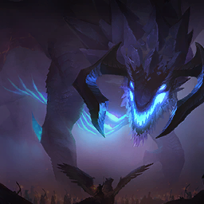
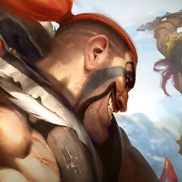
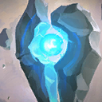
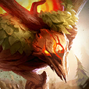
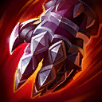

롤토체스 드레이븐 덱 vs 장로 드래곤 덱, 5코 주인공 덱 5종의 평균등수는 4.06~4.76이었어요
롤토체스 세트18에서 5코스트 드레이븐과 장로 드래곤이 코어 첫 자리, 그러니까 덱 핵심 유닛 맨 앞에 적힌 챔피언인 덱을 모아 보니 다섯 종이었는데요, 평균등수가 4.06부터 4.76까지 꽤 넓게 퍼져 있었어요ㅎㅎ 이 글에서는 이런 덱을 5코 주인공 덱이라고 불러요. 간판이 같다고 성적까지 비슷하진 않더라고요. 그래서 챔피언 이름 대신 구성과 아이템을 든 유닛, 협곡야수 활성 수를 나란히 놓고 읽어 볼게요.

두 덱 계열 가운데 몸집이 큰 쪽, 장로 드래곤이에요.
이미지 출처: Riot Games · Teamfight Tactics (CommunityDragon)
5코 주인공 덱 5종, 평균등수는 4.06부터 4.76까지였어요
드레이븐이 코어 첫 자리인 덱은 평균등수 4.06과 4.46, 장로 드래곤이 코어 첫 자리인 덱은 4.16·4.70·4.76으로, 주인공 챔피언만으로는 성적이 갈리지 않았어요. 기준은 롤체지지 패치 18.4b, 마스터+ 랭크, 최근 2일, 전체 표본 447,975판이고 2026-10-16 00:06 KST에 조회한 값이에요. 라이브 수치라 시간이 지나면 달라질 수 있어요.
| 덱 | 코어 첫 자리 | 점유율 | 1위 비율 | 순방(4등 이내) | 평균등수 | 덱 표본 | 5코 수 |
|---|---|---|---|---|---|---|---|
| 협곡야수 드레이븐 | 드레이븐 | 9.20% | 24.2% | 55.2% | 4.06 | 41,220판 | 6/8 |
| 협곡야수 조약돌 | 장로 드래곤 | 5.44% | 11.9% | 56.6% | 4.16 | 24,353판 | 3/8 |
| 처형자 이즈리얼 | 드레이븐 | 2.31% | 20.0% | 48.2% | 4.46 | 10,370판 | - |
| 협곡야수 장로 드래곤 #1 | 장로 드래곤 | 1.72% | 7.3% | 45.8% | 4.70 | 7,711판 | 3/8 |
| 협곡야수 장로 드래곤 #2 | 장로 드래곤 | 1.72% | 12.4% | 43.8% | 4.76 | 7,696판 | 5/8 |
점유율은 전체 447,975판에서 차지하는 비중이고, 나머지 지표는 각 덱을 잡은 판 안에서 계산돼 분모가 달라요. 이름이 같은 협곡야수 장로 드래곤 두 덱은 표본이 큰 쪽을 #1로 불러요. 드레이븐 덱의 8기와 아이템은 「협곡야수 드레이븐 평균등수 1위 덱」 글에서 자세히 다뤘으니, 이번 글에서는 비교에 필요한 만큼만 꺼냈어요.
드레이븐은 뒤에서, 장로 드래곤은 앞에서 맡는 일이 달라요
드레이븐은 사거리 6에 체력 900으로 뒤에서 출혈을 쌓는 쪽이고, 장로 드래곤은 사거리 2에 체력 1800으로 앞에서 적을 기절시키는 쪽이에요. 아래는 1성 기준 능력치와 스킬 문장을 롤체지지 챔피언 정보에서 옮겼어요.
| 항목 |  드레이븐 드레이븐 |  장로 드래곤 장로 드래곤 |
|---|---|---|
| 코스트·특성 | 5코 · 현상금 추적자(유일) | 5코 · 최상위 포식자, 협곡야수 |
| 체력 | 900 | 1800 |
| 공격력 | 48 | 125 |
| 방어력/마법 저항력 | 45/45 | 75/75 |
| 사거리 | 6 | 2 |
| 시작 마나/최대 마나 | 0/110 | 20/60 |
| 스킬 요약 | 기본 공격이 무작위 적에게 출혈(12초 동안 공격력의 150/225/3000% 물리 피해)을 걸고, 스킬로 도끼 둘을 던져 출혈을 터뜨려요 | 사용하면 무적으로 날아올랐다 내려와 모든 적을 1.25/1.25/99초 기절시키고 피해 흡혈을 얻고 적에게 점화를 걸어요 |

사거리 6에서 출혈을 쌓는 드레이븐이에요.
이미지 출처: Riot Games · Teamfight Tactics (CommunityDragon)
장로 드래곤은 최상위 포식자 특성 때문에 팀 슬롯을 2칸 쓰고 협곡야수 활성 수도 +2 더해 줘요. 그래서 8기짜리 덱이어도 보드에는 아홉 자리가 필요해요.
장로 드래곤이 주인공인 덱이 세 개나 있어요
장로 드래곤이 코어 첫 자리인 덱은 협곡야수 조약돌(4.16), 협곡야수 장로 드래곤 #1(4.70), #2(4.76) 세 갈래로 나뉘어 있어요. 이전 글 때도 이름이 같은 덱이 둘이었는데, 이번에는 이름이 다른 협곡야수 조약돌 덱까지 장로 드래곤이 코어 첫 자리라 셋이 됐어요.
- 협곡야수 조약돌은 5코가 장로 드래곤·나르·타릭 셋뿐이고 나머지는 협곡야수 저코스트가 채우는 구성이에요.
- 협곡야수 장로 드래곤 #1은 조약돌 덱과 유닛 8기가 똑같아요. 다음 절에서 따로 볼게요.
- 협곡야수 장로 드래곤 #2는 장로 드래곤·애쉬·마오카이·아이번·타릭, 5코 다섯 기가 중심이라 드레이븐 덱 쪽에 가까운 고코스트 구성이거든요.
같은 8기인데 아이템을 든 유닛이 달랐어요
협곡야수 조약돌과 협곡야수 장로 드래곤 #1은 8기 구성이 완전히 같은데, 평균등수는 4.16과 4.70으로 0.54 벌어졌어요. 두 덱이 함께 쓰는 8기는 아래와 같아요. 롤체지지 목록에서 감시자로 적힌 유닛은 공식 표기로 파수꾼이에요.




장로 드래곤, 조약돌, 덩굴정령, 돌거북, 나르, 어스름늑대, 파수꾼, 타릭 순이에요.
챔피언 아이콘 출처: Riot Games · Teamfight Tactics (CommunityDragon)
| 구분 | 협곡야수 조약돌 | 협곡야수 장로 드래곤 #1 |
|---|---|---|
| 평균등수 · 순방 | 4.16 · 56.6% | 4.70 · 45.8% |
| 1위 비율 · 표본 | 11.9% · 24,353판 | 7.3% · 7,711판 |
| 장로 드래곤 | 무한의 대검·최후의 속삭임·타격대의 철퇴 | 무한의 대검·최후의 속삭임·타격대의 철퇴 |
| 그 밖에 아이템을 든 유닛 | 조약돌(푸른 파수꾼·보석 건틀릿·라바돈의 죽음모자), 덩굴정령(밤의 끝자락·수은·스테락의 도전), 돌거북(가고일 돌갑옷·정령의 형상·워모그의 갑옷) | 덩굴정령(피바라기·밤의 끝자락·구인수의 격노검), 파수꾼(가고일 돌갑옷·수호자의 맹세·워모그의 갑옷) |
| 아이템이 없는 유닛 | 나르·타릭·어스름늑대·파수꾼 | 나르·조약돌·돌거북·어스름늑대·타릭 |
장로 드래곤의 세 번째 아이템도 눈에 띄더라고요. 장로 드래곤이 코어 첫 자리인 세 덱은 모두 타격대의 철퇴를 들고, 드레이븐 덱의 장로 드래곤은 스테락의 도전을 들어요. 철퇴는 치명타를 맞히면 5초 동안 피해 증폭 5%가 최대 4번 쌓이고, 스테락의 도전은 체력 60%에서 최대 체력 40% 보호막이 생겼다 4초에 걸쳐 줄어들어요.


왼쪽이 타격대의 철퇴, 오른쪽이 스테락의 도전이에요.
아이템 아이콘 출처: Riot Games · Teamfight Tactics (CommunityDragon)
협곡야수 활성 수는 4와 8, 두 갈래예요
드레이븐 덱의 협곡야수는 활성 수 4(브론즈 구간), 조약돌 덱과 장로 드래곤 #1의 협곡야수는 활성 수 8(골드 구간)이에요. 장로 드래곤이 +2를 더해 4와 8이 돼요.
| 덱 | 협곡야수 활성 수 | 계산 | 켜지는 효과 |
|---|---|---|---|
| 협곡야수 드레이븐 | 4 (브론즈) | 장로 드래곤 1+2, 파수꾼 1 | 활성 3의 우두머리 표식 |
| 협곡야수 조약돌 · 장로 #1 | 8 (골드) | 장로 드래곤 1+2, 조약돌·돌거북·어스름늑대·덩굴정령·파수꾼 각 1 | 활성 3의 표식, 5의 상점 뒤덮임, 7의 전투 중 성장 |
(7) 협곡야수 효과는 전투 시작 때와 5초마다 협곡야수가 자라는 효과인데요, 18.4 패치에서 5초마다 붙는 증가량이 5%에서 6%로 올랐어요. 이 상향은 활성 수 7을 넘기는 협곡야수 8 덱에만 해당하고, 활성 수 4인 드레이븐 덱은 해당이 없네요. 나르는 나무정령·날렵이·싸움꾼 특성이라 협곡야수 활성 수에 들어가지 않아요.
5코 10종 가운데 두 챔피언은 어디쯤일까요
5코스트 챔피언 단위로 보면 장로 드래곤은 평균등수 4.04로 10종 중 중간대이고, 드레이븐은 4.24로 하위 2위예요. 이 수치는 덱 표와 별개의 챔피언 표(표본 499,768판, 롤체지지 갱신 10-15 23:35, 조회 2026-10-16 00:06 KST, 패치 18.4b)에서 가져왔어요. 장로 드래곤은 등장률 13.12%(65,545판), 드레이븐은 11.47%(57,325판)이에요.
롤체지지 메타덱 목록에서 세 덱이 나란히 보이는 화면이에요.
자주 묻는 질문
Q. 표의 5코 수 6/8은 무슨 뜻인가요?
덱 8기 가운데 5코스트 챔피언이 6기라는 뜻이에요. 드레이븐 덱은 6/8, 조약돌 덱과 장로 드래곤 #1은 3/8, #2는 5/8이라서 같은 8기 덱이어도 고코스트 비중이 꽤 달랐어요.
Q. 협곡야수 활성 수 4와 8은 뭐가 달라요?
활성 수 4는 (3) 구간 효과인 우두머리 표식까지만 켜지고, 8은 (3)·(5)·(7) 효과가 모두 켜져요. 5초마다 자라는 (7) 협곡야수 효과는 8 덱에서만 돌아가거든요.
Q. 이 수치는 계속 바뀌나요?
네, 롤체지지 값은 라이브라서 패치나 표본이 바뀌면 순위도 달라질 수 있어요.
드레이븐 덱은 1위 비율 24.2%로 표에서 가장 높고, 조약돌 덱은 순방 56.6%로 가장 높아서, 한 판의 상한을 노린다면 드레이븐 덱을, 4등 안을 안정적으로 지키고 싶다면 조약돌 덱을 먼저 보세요. 즐겜하세요~
✔ 롤토체스 같이 보기 좋은 내용
· 롤토체스 기원자 아리 조합 아이템 정리, 특성 빌드까지 한 번에
· 롤토체스시즌18 싸움꾼 마스터 이 렝가덱 사용법 공략
· 롤토체스 사냥꾼 시비르 덱 추천 — 점유율 2위 강세덱, 특성 9개 한 번에 켜는 조합
참고한 곳
· 라이엇 게임즈 — 전략적 팀 전투 패치 노트 18.4
· 라이엇 게임즈 — 전략적 팀 전투 신비의 숲(세트18) 공식 개요
· 롤체지지 메타덱·챔피언·아이템 정보 (2026.10.16 00:06 KST 조회)
· 이미지 출처: Riot Games · Teamfight Tactics (CommunityDragon)